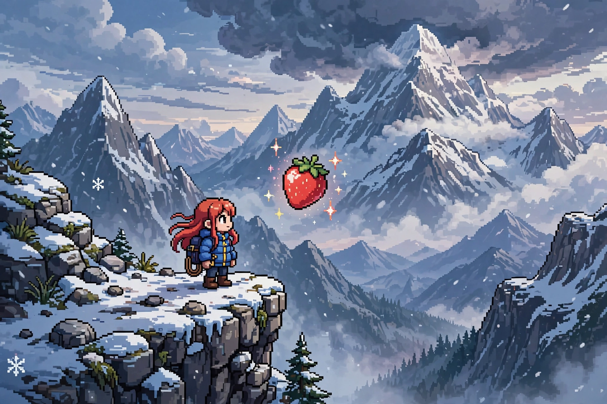

CelesteCeleste is a 2018 platform game developed and published by the Canadian studio Maddy Makes Games. The player controls Madeline, a young woman with anxiety and depression who aims to climb Celeste Mountain, mastering jumping, air-dashing and climbing across more than 700 precision-platforming screens.
Madeline's dash replenishes on landing; each chapter introduces mechanics such as dream blocks and wind. On the mountain she confronts "Part of Me" (Badeline), a manifestation of her insecurities. The story, widely praised, treats mental health with unusual directness for the genre, and the forgiving Assist Mode lets players adjust speed and stamina.
The game grew from a four-day game jam Pico-8 prototype by Maddy Thorson and Noel Berry in 2015. Lena Raine's synth-and-piano soundtrack was acclaimed. A free expansion, Chapter 9: Farewell, arrived in September 2019.
Celeste received universal acclaim, sold over a million copies by the end of 2019, and won Best Independent Game at The Game Awards 2018, where it was also nominated for Game of the Year.